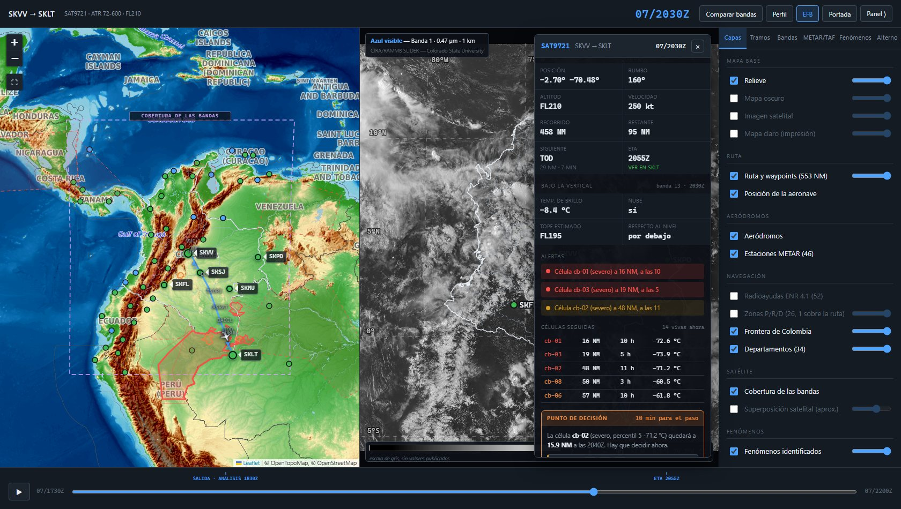
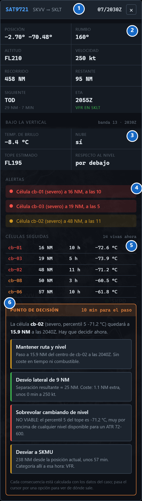
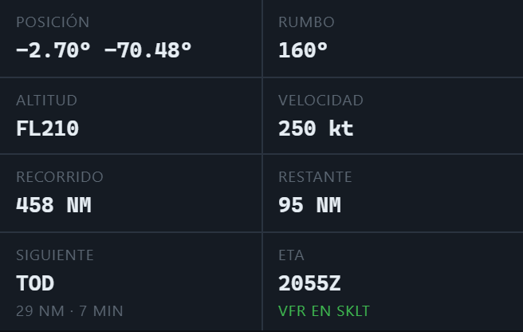
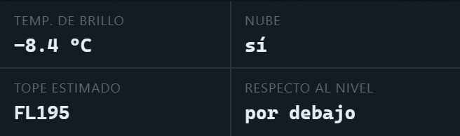
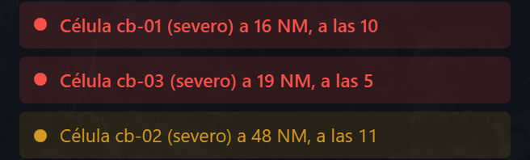
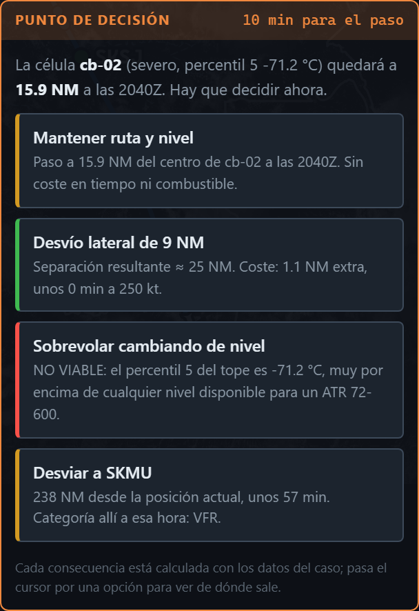
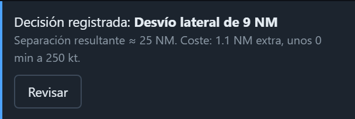

Si solo se retiene una cosa de esta guía, que sea esta.
El mapa y el corte vertical contestan «cómo está la ruta». El EFB contesta otra pregunta, que es la que se hace de verdad en cabina: «¿qué tengo delante ahora mismo, y cuánto tiempo me queda para decidir?» Por eso el panel no enseña la ruta entera: enseña un instante del vuelo, y cambia entero al mover la barra de tiempo.
La barra de tiempo mueve la aeronave por la ruta. Para cada posición, el EFB reúne cuatro cosas que en el resto del visor están separadas: dónde está el avión, qué hay sobre él según el satélite, qué células tiene alrededor y qué le espera en el destino.
Nada de eso está escrito de antemano. Cada campo se calcula en el momento a partir de las imágenes congeladas de la banda 13, del METAR de las estaciones y de la geometría de la ruta. Si un dato falta, el panel lo dice en vez de rellenarlo: «sin lectura satelital en esta posición», «color ambiguo en este punto».
Esa es la diferencia entre un panel de cabina y una maqueta: una maqueta enseña lo que se quiere enseñar; este panel enseña lo que se puede medir, con su hora y su fuente escritas al lado.
Se abre con el botón EFB de la cabecera y flota sobre el mapa.

Flota a propósito. Si el panel ocupara una pestaña, habría que elegir entre ver el mapa o ver los datos del vuelo, que es justo lo que no se quiere: la gracia está en leer «célula a 16 NM a las 10» y poder mirar el mapa en ese mismo momento para verla.
El botón EFB aparece en la cabecera solo cuando hay análisis radiométrico disponible. Si faltara la tabla de color de la banda 13, el visor sigue funcionando pero el EFB no se ofrece: no hay con qué calcular la lectura bajo la vertical.
Se cierra con la × de su cabecera. Se puede dejar abierto mientras se mueve la barra de tiempo, y esa es la forma natural de usarlo en la exposición: abrirlo y recorrer el vuelo.
Siempre en el mismo orden, de lo seguro a lo que exige decidir.

| Bloque | Qué contiene | |
|---|---|---|
| 1 | Cabecera | Indicativo, ruta y hora Zulu. Es la misma hora de la barra de tiempo: si el reloj del EFB dice 2030Z, todo lo que hay debajo es de las 2030Z. |
| 2 | Rejilla de vuelo | Ocho campos: posición, rumbo, altitud, velocidad, recorrido, restante, siguiente punto y ETA. El apartado 4 los desglosa. |
| 3 | Bajo la vertical | Lo que el satélite ve justo encima del avión: temperatura de brillo, si hay nube, el tope estimado y si ese tope queda por encima o por debajo del nivel. |
| 4 | Alertas | De una a cuatro líneas de color. Rojo es alerta, ámbar es aviso, verde es «sin conflictos». Nunca está vacío. |
| 5 | Células seguidas | Las cinco más próximas en este instante, con distancia, marcación en horas de reloj y temperatura de su tope. |
| 6 | Punto de decisión | Solo aparece cuando falta poco para un encuentro comprometido. Trae las opciones con su coste calculado. |
El orden no es casual: arriba lo que siempre está (dónde estoy), en medio lo medido (qué hay encima, qué hay cerca) y abajo lo que obliga a actuar. Se lee de arriba abajo y termina en una decisión.
Ocho campos, cuatro fuentes distintas. Conviene saber cuál es cuál.

| Campo | De dónde sale |
|---|---|
| Posición | Interpolación sobre la ruta publicada según la fracción de vuelo transcurrida. Es la posición prevista, no una traza real. |
| Rumbo | Rumbo del tramo que se está volando, calculado sobre las coordenadas de los waypoints. |
| Altitud | Interpolada: sube de la elevación de SKVV (1 381 ft) a FL210 hasta el TOC, se mantiene en crucero, y baja desde el TOD hasta SKLT (271 ft). Es el perfil previsto. |
| Velocidad | 250 kt, la velocidad de crucero declarada del ATR 72-600 en el caso. Es constante: no se modela viento. |
| Recorrido / Restante | Sobre las 553 NM reales de la ruta, repartidas entre la salida (1830Z) y la ETA (2055Z). |
| Siguiente | El siguiente punto publicado por delante, con su distancia y los minutos que faltan a 250 kt. |
| ETA | La hora estimada del caso, y debajo la categoría meteorológica del destino a esa hora, calculada con el METAR vigente. Por eso el color cambia solo. |
La pregunta que se puede caer encima: «¿esa posición es real?». No, y hay que decirlo antes: es la posición prevista del plan de vuelo recorrida a velocidad constante. Lo que sí es medido es todo lo que el panel dice sobre esa posición: la temperatura de brillo, los topes y las células salen de las imágenes.
Cuatro campos que contestan «¿qué tengo justo encima?».

El panel toma la posición exacta del avión, va al cuadro de la banda 13 más
próximo a esa hora e invierte la tabla de color para obtener la temperatura de
brillo de ese píxel. La cabecera del bloque dice de qué cuadro se ha leído
(banda 13 · 2030Z), que es la trazabilidad del dato.
Nube: sí / no detectada. Es la máscara de nube: separa nube de superficie por temperatura. Un «no detectada» no significa cielo despejado, significa que a esa temperatura no se puede distinguir la nube del suelo tropical.
Tope estimado. La altura del tope no la mide el satélite: se calcula desde la temperatura con un gradiente térmico tipo. Por eso dice «estimado». Cuando la temperatura cae por debajo de la tropopausa del modelo, el panel escribe «sobre tropopausa» en vez de inventar un número.
Respecto al nivel. La comparación que importa: ese tope, ¿queda POR ENCIMA o por debajo de FL210? Es lo mismo que hace el corte vertical, pero solo en el punto donde está el avión.
Si la lectura no es concluyente, lo dice. La tabla de color usa el gris dos veces —para lo muy cálido y para lo muy frío—, así que hay puntos ambiguos. En esos casos aparece «color ambiguo en este punto: lectura no concluyente», y no se afirma nada. Ese aviso es una función, no un fallo.
Cuatro tipos de alerta, todas con una medida detrás.

| Alerta | Cuándo salta | Qué hay detrás |
|---|---|---|
| Célula próxima (ámbar) | < 50 NM | Aviso. Se listan como mucho las tres más próximas. |
| Célula próxima (rojo) | < 25 NM | Alerta. 25 NM es la separación que se busca mantener, y por eso es también el umbral del punto de decisión y del veredicto EVITAR de la pestaña Tramos. |
| Tope sobre el nivel (rojo) | tope > FL210 | Hay nube en la vertical y su tope supera el nivel de crucero. Sale de la lectura del apartado 5. |
| Destino degradado (rojo) | IFR o LIFR | La categoría de SKLT calculada con el METAR vigente a la hora estimada de llegada, no a la hora actual. |
| Sin conflictos (verde) | ninguna de las anteriores | «Sin conflictos a menos de 50 NM». El bloque nunca queda vacío: el silencio se afirma, no se deja en blanco. |
«A las 10», «a las 5». La marcación se canta en horas de reloj relativas al morro del avión, que es como se usa en cabina: las 12 es de frente, las 3 a la derecha, las 9 a la izquierda. Sale de comparar la marcación real a la célula con el rumbo actual.
Cada alerta guarda su medida. Al pasar el cursor por encima aparece el detalle: percentil 5 del tope, área en millas cuadradas y marcación en grados. Es la respuesta preparada para «¿de dónde sacas eso?».
Cuatro columnas, y un criterio temporal que conviene saber explicar.
La tabla lista las cinco células más próximas en este instante, ordenadas por distancia: identificador, distancia en NM, marcación en horas de reloj y percentil 5 de la temperatura de su tope. El color del identificador es su severidad.
La cabecera dice cuántas están vivas ahora —a 2030Z son 14—, que no es lo mismo que cuántas hay en el archivo: una célula solo cuenta si tiene un paso seguido a menos de 15 minutos de la hora actual.
El detalle que distingue un panel serio de una animación: la distancia se mide contra el paso de la célula más cercano en el tiempo, no contra su geometría de máximo desarrollo. Una célula que a las 2030Z está a 18 NM pudo estar a 80 NM a las 1950Z. Mezclar las dos cosas daría una alerta falsa, así que no se mezclan.
Esto es lo que permite mover la barra de tiempo y ver la tabla reordenarse sola: las células se acercan, se alejan y desaparecen cuando dejan de estar vivas. No es una animación preparada; es el seguimiento célula a célula, cuadro a cuadro.
Lo más importante del panel: cuatro opciones, cada una con su cuenta.


Cuándo aparece. No es un guion: se dispara con el encuentro calculado con la célula más comprometida —la que pasará a menos de 25 NM— y solo dentro de los 20 minutos previos al punto de máxima aproximación. Antes no hace falta decidir; después ya no sirve de nada.
| Opción | La cuenta que trae |
|---|---|
| Mantener ruta y nivel | La separación a la que se pasaría y la hora. Coste cero. |
| Desvío lateral | Las millas necesarias para separarse 25 NM, y su coste: 2·(√((150/2)² + d²) − 150/2) sobre un tramo de 150 NM. Es geometría declarada, no una estimación a ojo. |
| Cambiar de nivel | Se compara el percentil 5 del tope con los niveles disponibles. Con topes de −71 °C sale NO VIABLE, y dice por qué. |
| Desviar al alterno | Distancia al alterno más próximo desde la posición actual, minutos a 250 kt y la categoría que tendría ese alterno a la hora de llegar. |
Pasar el cursor por una opción enseña su base. Cada una guarda escrito de dónde sale su número. Esa es la prueba de que las consecuencias están calculadas y no redactadas de antemano.
Un guion de cinco frases, con el EFB abierto y la barra de tiempo en la mano.
Si preguntan «¿esto no es un simulador de vuelo?»: no. Un simulador genera un escenario; esto lee uno real. La posición es la del plan de vuelo, pero cada cosa que el panel dice sobre esa posición sale de imágenes GOES congeladas de ese día y de los METAR de esa hora. Lo que se demuestra no es pilotar: es que con teledetección se puede anticipar una decisión que en ruta se tomaría a ciegas.
Decir los límites antes de que los pregunten es lo que sostiene el resto.
1. La posición no es una traza real. Es el plan de vuelo recorrido a velocidad constante entre la salida y la ETA. No hay viento, ni retrasos, ni vectores de control. El EFB no reconstruye un vuelo que ocurrió: recorre el que estaba planificado.
2. La altitud es la prevista, no la volada. Ascenso y descenso son rectas entre el TOC y el TOD. Sirve para comparar con los topes de nube, no para afirmar a qué altura estaba el avión en un instante.
3. El satélite ve el tope. Lo que hay bajo el yunque —base de nube, cizalladura, granizo— no está en el dato. Una célula «a 16 NM» es a 16 NM de su centroide en el tope.
4. El alterno se elige por distancia. La opción «desviar al alterno» toma el más próximo a la posición actual y comprueba su categoría, pero no evalúa pista, servicios ni combustible remanente. Es un apoyo a la decisión, no una planificación de alternos.
5. Los umbrales son criterio declarado. 50 NM para el aviso, 25 NM para la alerta y 25 NM de separación objetivo son decisiones de este trabajo, escritas en el código y defendibles como criterio. No son una norma citada.
La frase que cierra: el EFB no sustituye al radar meteorológico de a bordo ni al control de tránsito aéreo. Enseña algo que ninguno de los dos da: las 553 NM de ruta completas, con dos horas de antelación, que es lo que convierte un desvío improvisado en un desvío planificado.